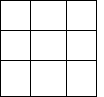
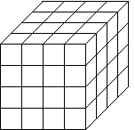

| Starting
with a line segment of length one, we can scale the segment by 1/2 and observe
that 2 copies of length 1/2 cover the original line segment. |
| To cover the original line segment we need three segments scaled by 1/3,
four segments scaled by 1/4, and so on. |
| Note that 2 = 1/(1/2), 3 = 1/(1/3), and
4 = 1/(1/4). |
| In general, representing the scale by r and the number of
segments of scale r by N(r) we have the relationship |
| N(r) = 1/r. |
|
|
|
| Scaled by 1/2 |
Scaled by 1/3 |
Scaled by 1/4 |
|
| To cover a square of side length 1 we need 4 copies of the square
scaled by 1/2 along all its sides. |
| Similarly we need 9 squares scaled by 1/3, 16 squares scaled by
1/4, and so on. |
| Note that 4 = (1/(1/2))2, 9 = (1/(1/3))2,
and 16 = (1/(1/4))2. |
| In general, |
| N(r) = (1/r)2. |
|
 |
|
| Scaled by 1/2 |
Scaled by 1/3 |
Scaled by 1/4 |
|
| To cover a cube of side length 1 we need 8 copies of the cube
scaled by 1/2 along all its sides. |
| Similarly we need 27 cubes scaled by 1/3, 64 cubes scaled by
1/4, etc. |
| Note that 8 = (1/(1/2))3, 27 = (1/(1/3))3,
and 64 = (1/(1/4))3. |
| In general, |
| N(r) = (1/r)3. |
|
|
 |
| Scaled by 1/2 |
Scaled by 1/3 |
Scaled by 1/4 |
|